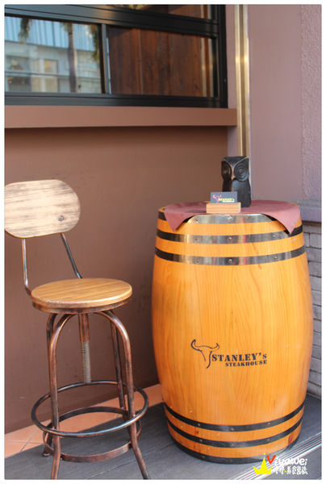
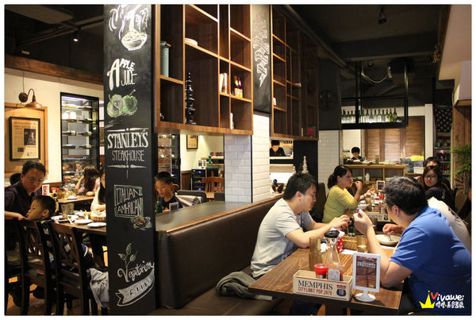
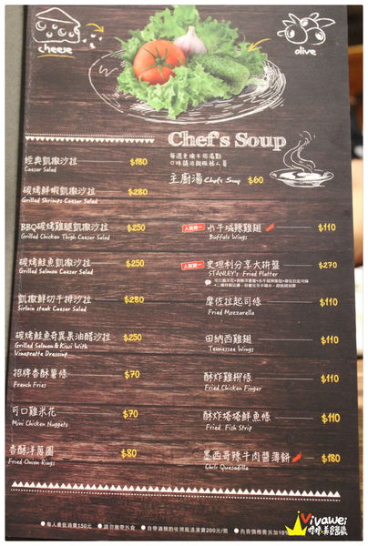
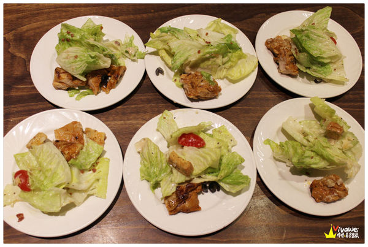
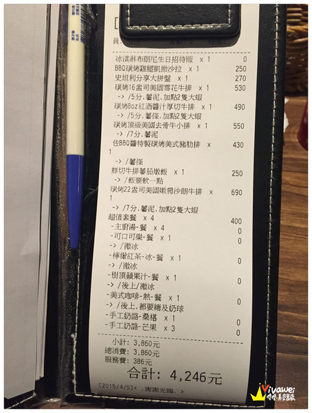

這一間「史坦利美式牛排」在新竹地區頗有名氣，總共有兩間分店，其中一間分店在竹北， 今天來到的這間分店在新竹巨城百貨對面，交通很方便，在新竹火車站對面的sogo有接駁車可以搭乘！
門口處有大大的酒桶，還有店家的名片可以拿取。
這是一樓的用餐空間，位置不多，而且當天我們六個人來用餐，店家卻安排四人的座位給我們， 一樣的空間，別桌的客人都是四個人座，用餐起來很擁擠，這部分覺得店家安排的很不妥！
店家表示因為人力不足所以沒有開放二樓的座位，所以一樓擠到不行，二樓卻完全淨空， 覺得店家需要在空間上做調整，而不是犧牲了客人應該有的權益，六個人要擠四個人的位置真的很不開心。
有炸物拼盤還有沙拉、薄餅類可以選擇，很適合跟家人朋友互相share。
點排餐的話可以加價100元多加兩隻大蝦。
除了排餐以外，店家還有販售漢堡、義大利麵還有燉飯等餐點， 凡點主餐都可以加價100元升級套餐，套餐有主廚湯、飲料、手工奶酪（桑葚／芒果） 飲料的部分可以選：檸檬紅茶（冰／熱）、美式咖啡（冰／熱）、樹頂蘋果汁、可樂、雪碧。 建議不用每個人都加套餐，例如我們今天六人來用餐，就加了四份套餐，可以互相share。
如果不直接點套餐的飲品，也有其他的飲品可以選擇，還有冰淇淋等甜點。
這裡還有販售紅酒類的酒品（開車不喝酒，喝酒不開車）
桌上擺放著餐具和醬料，還有檸檬水。
湯品的部分很濃郁，奶味很重，喝起來很不錯！
木盆沙拉的份量也很多，適合三到四人用餐時點來分享，裡面有滿滿的沙拉、番茄還有雞肉。
六個人來用餐，每個人都可以分到一些，雞肉是烤過的，口感蠻嫩的！還不錯！
炸物拼盤的分量很多，我們六個人吃都還吃不完呢，裡面有起司條、雞翅、洋蔥圈、雞米花。
洋蔥圈表現普普通通，單點價為一份70元。
起司條吃起來還算ｏｋ，單點價是一份70元。
雞米花還算不錯，單點價是一份70元。
水牛城辣雞翅是今天拼盤內最受歡迎的一道，很好吃！單點價一份110元。
壽星優惠有贈送這份冰淇淋布朗尼，需要在入座前先出示壽星的證件讓店家查證， 但是不確定要當天生日還是提早幾天的生日也ｏｋ，需要打電話詢問一下， 我們來用餐時是有當天的壽星，也有在電話訂位時就先告知：）
這是我們今天消費的明細，總金額是4246元，六個人來用餐，平均一人是七百元左右， 會覺得牛排點的太多，最後也根本吃不完，我們當天其實再少點兩份牛排會比較剛好！
▲整體而言，會覺得「史坦利美式牛排」吃下來的感覺還算ｏｋ，只是座位安排上讓人不太滿意， 餐點的份量都很足夠，價錢上只有排餐的價格稍高了些，他們的燉飯和拼盤也都不算貴， 建議人多一點來用餐可以點些不一樣的餐點互相share，如果都點排餐會覺得太膩口了。
引自:http://vivawei.pixnet.net/blog/post/5406292